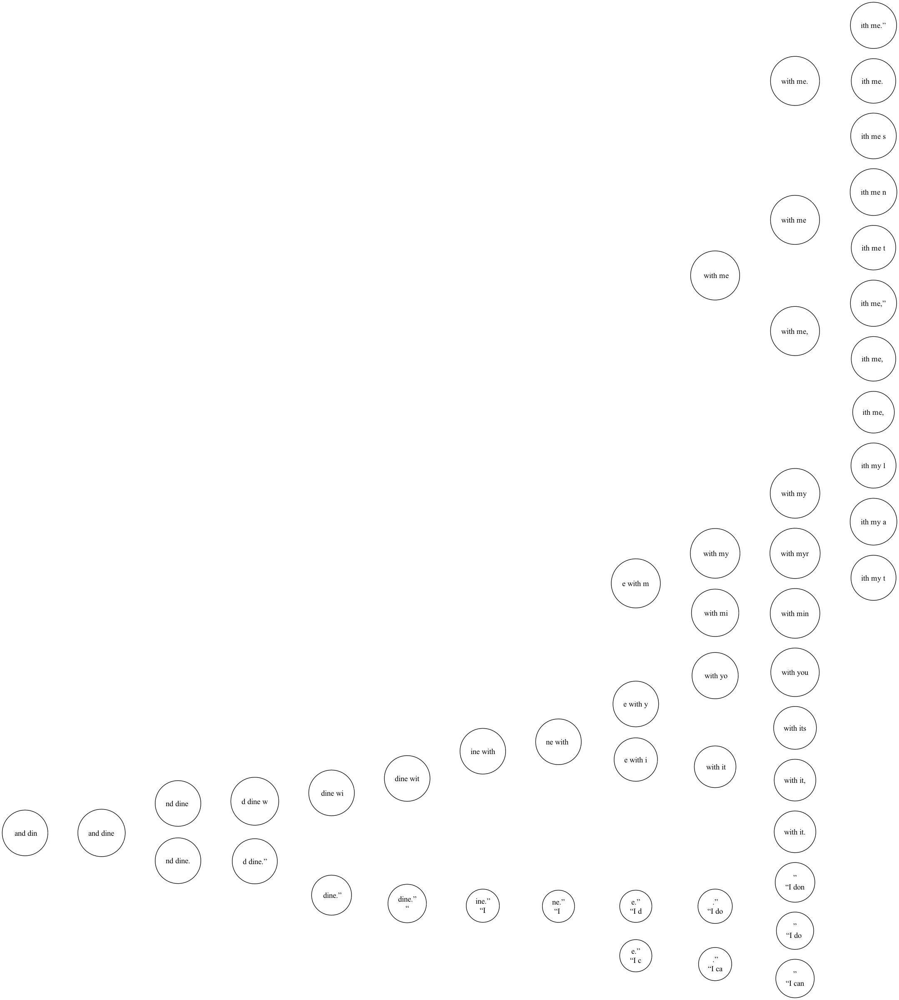

This character level Markov chain generates text in the style of "The Picture of Dorian Gray" by Oscar Wilde. The model is trained by calculating the transition probabilities seen within the text and then is used to generate new text by randomly sampling the next character based on the transition probabilities from the previous character sequence. You can check out the code for this project here.